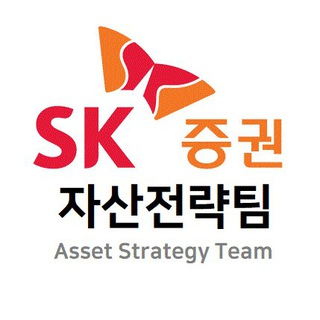

[SK증권 조준기][Market Nowcast] 갈리는 시간표

세 줄로 읽기
주간 수익률만 보면 위험회피가 완화됐지만, 금요일 KOSPI가 장중 +3.03%에서 종가 -0.98%로 반전하고 미국 NASDAQ과 필라델피아 반도체지수도 각각 -0.91%, -3.43% 하락.
• 지난주 국내외 증시는 직전 급락 이후 강하게 반등했으나, 주 후반에는 상승분을 유지하는 힘이 약해지는 모습.
• 코어위브와 네비우스 실적은 AI 인프라 투자 확대에도 실제 매출 전환 속도에 따라 시장의 평가가 달라질 수 있음을 보여준 사례.
원문 문장에서 고른 요약입니다. 숫자와 사실은 원문에서 다시 확인하세요.
핵심 포인트
- 1주중 코어위브 실적이 AI 투자에 대한 우려를 일부 되돌렸다면, 후반에는 엔비디아 경영진 교체와 금리 상승이 회복의 지속성을 제약
- 2코어위브는 인프라 조기 인도를 근거로 올해 CapEx 전망 하단을 350억달러에서 370억달러로 상향하며 AI 수요
- 3둔화 우려를 일부 완화.
- 4반면 네비우스는 일부 시설 가동이 2027년 상반기로 지연되면서 올해 매출 전망은 기존 범위의 하단으로 낮추고 CapEx는 약 270억달러로 확대.
이 블로거의 최근 글
- [SK증권 원유승][11월 금통위 Review] 'Family Fight' 시작. 결과는 3.50%로 수렴할 것
- [SK증권 강대승][전략 COMMENT] 약세장인지 조정인지, 신용잔고가 뒤늦게 답한다
- [SK증권 원유승][11월 금통위 Preview] 만장일치 인상 전망. ‘호미’의 결과는 최종금리 3.50%
- [SK증권 조준기][Market Nowcast] 부담과 가격
- [SK증권 원유승][채권 COMMENT] 빅스텝 아니어도 금리는 연말까지 상승 압력 우위
같은 분류의 다른 글
- 삼성SDI, '역대 최대' ESS 정부계약 63% 수주
- 中 임산부들 "아이 성별 궁금해"…수만개 혈액샘플 국경 넘다 덜미
- 새 ECB 수장 데 코스, 유럽 물가 잡나
- 동국제강 '오너 4세' 장선익 사장 승진
- HD현대, 中 건설기계 부품사업 확대
공개 페이지에는 짧은 소개와 원문 링크만 있습니다. 원문 전문은 올리지 않습니다.